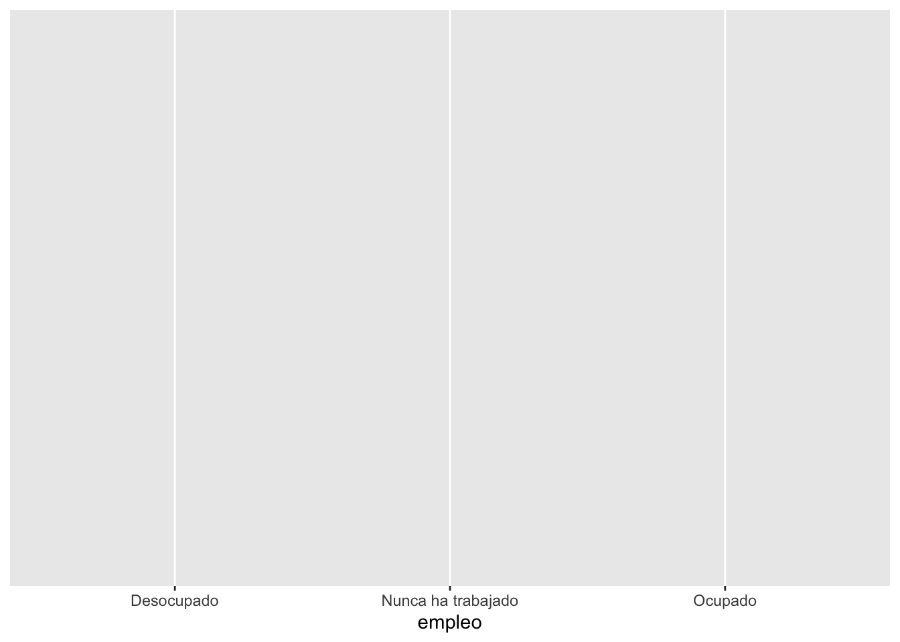
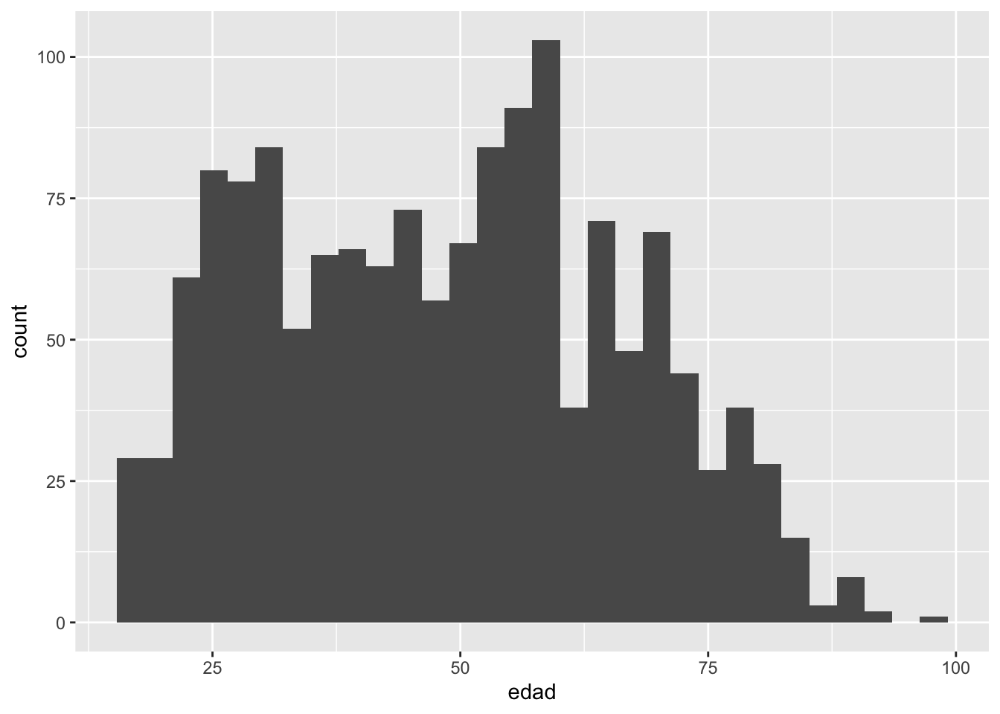
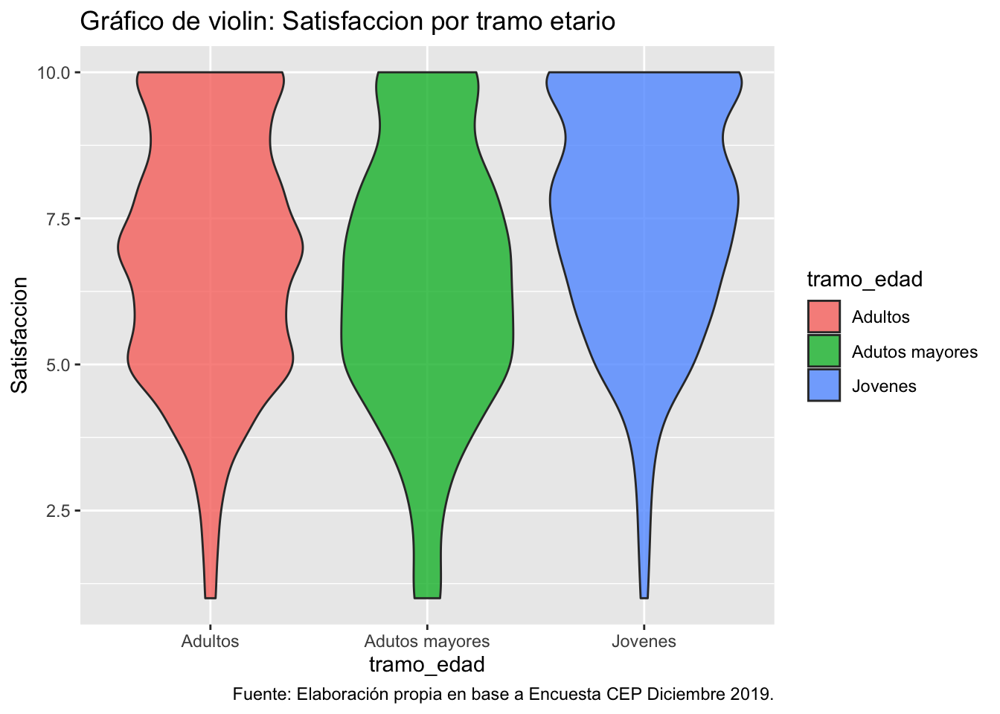

Práctica 6. Visualización de datos con R
Sesión del jueves, 1 de junio de 2023
Presentación
Objetivo de la práctica
El objetivo de esta guía práctica es introducir a la visualización de datos con R, considerando las mejores prácticas para comunicar datos y análisis en ciencias sociales.
En detalle, aprenderemos:
Qué es la visualización de datos y cómo comunicarlos a una audiencia de manera eficiente, completa e insesgada.
Visualizar datos univariados con
{ggplot2}.
Recursos de la práctica
En esta práctica trabajaremos con la base de datos de la Encuesta de Opinión Pública (CEP) de Diciembre del 2019 realizada por el Centro de Estudios Públicos. Esta base la pueden encontrar en el canal de U-Cursos sección Material Docente, o bien, en el siguiente enlace CEP 2019 podrán descargar el archivo que contiene la base CEP Diciembre 2019.
¿Qué es visualizar datos?
La visualización de datos consiste en dar sentido a filas y columnas de datos, presentándolos en un formato fácilmente comprensible a una audiencia.
Visualizar datos es una de las tareas más recurrentes en estadística, al mismo tiempo que es una de las formas más delicadas de comunicar información. ¿A qué nos referimos? básicamente a que, como investigadores/as, comunicamos nuestros resultados buscando resaltar un aspecto de la realidad e intentando crear un mensaje con los datos. Por ello, es sumamente importante hacerlo de forma fidedigna, sencilla y pensando siempre en cómo la audiencia podría interpretarlo.

Cómo NO visualizar datos
Es bastante común ver malas formas de comunicar datos; en los medios de comunicación, redes sociales e inclusive en la misma investigación acádemica. Esto ocurre por diversos motivos, ya sea por elementos gráficos, de escalas o de orden que engañan al ojo y percepción humana. Algunos ejemplos de cómo no se deben comunicar datos son:
Algunos principios para visualizar datos
¿Y entonces cómo realizar una buena/correcta visualización de datos? Tengamos como premisa la siguiente cita:
“La excelencia gráfica es la presentación bien diseñada de datos interesantes: una cuestión de sustancia, de estadística y de diseño… [Consiste] en ideas complejas comunicadas con claridad, precisión y eficacia. … [Es] lo que da al espectador el mayor número de ideas en el menor tiempo con la menor tinta en el menor espacio … [Es] casi siempre multivariante … Y la excelencia gráfica requiere decir la verdad sobre los datos”.
Edward Tufte, The Visual Display of Quantitative Information, p. 51
10 Principios para la visualización de datos
Conoce a tu audiencia ¿Qué preguntas necesitan respuesta?
Utiliza el tipo de gráfico adecuado para representar el tipo de información que dispone.
La forma sigue a la función. Concéntrate en cómo va a utilizar los datos tu público y deja que eso determine el estilo de presentación.
Proporcione el contexto necesario para que los datos se interpreten y se actúe en consecuencia.
Mantenga la sencillez. Elimine la información no esencial.
Resalte la información más importante
Utilice los colores con prudencia
Utilice cuidadosamente las proporciones para que las diferencias de tamaño en el diseño representen fielmente las diferencias de valor.
Sé escéptico. Pregúntese qué datos no están representados y qué información podría, por tanto, malinterpretarse o perderse.
Muestra la verdad de tus datos, no lo que quisieras creer.
Preparación de datos
1. Cargar librerías
Para esta sesión, usaremos librerías que ya conocemos en prácticos pasados:
pacman::p_load(tidyverse, # colección de paquetes para manipulación de datos
haven, # para importar datos
car,# para recodificar datos
psych, # para analizar datos
sjmisc) # para analizar datos
options(scipen = 999) # para desactivar notacion cientifica
rm(list = ls()) # para limpiar el entorno de trabajo2. Importar datos
Cargamos la base de datos CEP Diciembre 2019 mediante el paquete haven
cep <- haven::read_sav("Input/data/CEP_dic2019.sav")3. Limpiar datos
Seleccionamos las variables de interés y las renombramos:
proc_cep <- cep %>%
select(edad = DS_P2_EXACTA,
sexo = DS_P1,
empleo = DS_P5,
satisfaccion = SV_1)Recodificamos las variables satisfaccion, sexo y empleo. Ademas, transformamos la variable edad a tramos:
proc_cep$sexo <- as.factor(proc_cep$sexo) # primero pasamos a factor la variable al venir con etiquetas
proc_cep$empleo <- as.factor(proc_cep$empleo)
proc_cep <- proc_cep %>%
mutate(satisfaccion=car::recode(satisfaccion, recodes = c("88 = NA; 99 = NA")),
sexo = car::recode(sexo, recodes = c("1 = 'Hombre'; 2 = 'Mujer'")),
empleo = car::recode(empleo, recodes = c("1 = 'Ocupado'; 2 = 'Desocupado'; 3 = 'Nunca ha trabajado'; 99 = NA")),
tramo_edad = case_when(edad <= 29 ~ "Jovenes",
edad >= 30 & edad <= 59 ~ "Adultos",
edad >= 60 ~ "Adutos mayores")) Removemos los valores perdidos o missing.
proc_cep <- na.omit(proc_cep)Por último, guardamos la base procesada.
saveRDS(proc_cep, file = "Output/proc_cep.RData")Análisis de la forma de distribución
Antes de visualizar los datos, es crucial analizar la forma de la distribución de nuestras variables. En este ejemplo tenemos:
- una nominal,
- una de razón,
- una ordinal de 10 categorías.
Nota
Distribución
Recordemos que por distribución nos referimos al ordenamiento de las categorías de respuesta o posibles valores de una variable y su frecuencia de ocurrencia.
sjmisc::frq(proc_cep$empleo)x <categorical>
# total N=1474 valid N=1474 mean=2.18 sd=0.92
Value | N | Raw % | Valid % | Cum. %
---------------------------------------------------
Desocupado | 513 | 34.80 | 34.80 | 34.80
Nunca ha trabajado | 180 | 12.21 | 12.21 | 47.01
Ocupado | 781 | 52.99 | 52.99 | 100.00
<NA> | 0 | 0.00 | <NA> | <NA>psych::describe(proc_cep$edad,
quant = c(.25,.75),
IQR = TRUE) vars n mean sd median trimmed mad min max range skew kurtosis se
1 1 1474 48.43 17.84 48.5 48.01 21.5 18 99 81 0.14 -0.93 0.46
IQR Q0.25 Q0.75
1 29 33 62psych::describe(proc_cep$satisfaccion,
quant = c(.25,.75),
IQR = TRUE) vars n mean sd median trimmed mad min max range skew kurtosis se IQR
1 1 1474 6.87 2.18 7 6.97 2.97 1 10 9 -0.32 -0.45 0.06 4
Q0.25 Q0.75
1 5 9Visualización de datos con ggplot2
Una vez que conocemos cómo es la distribución de nuestras variables, procedemos a graficarlas considerando los principios para una buena visualizacion de datos.
Pero antes, debemos conocer qué es ggplot2 y cúal es su lógica.
Ggplot2 es un potente paquete para visualizar datos en R. Funciona por capas, comenzando desde lo más central o nuclear hasta llegar a los detalles más estéticos necesarios.
- La primera capa corresponde a los datos, es decir, las variables que queremos graficar ya listas y procesadas.
- La segunda corresponde al “mapping”, que es básicamente determinar cuáles variables serán el eje X e Y, si existen grupos u otros.
- La tercera es la geometría, la cual se refiere a la forma que tendrá el gráfico (líneas, barras, puntos, boxplot, violinplot, etc.).
¡COMENCEMOS!
1. Diagrama de barras
La forma más común de presentar variables nominales es mediante un gráfico de barras.
En este primer ejemplo iremos capa por capa (o paso por paso), para entender la logica de ggplot2, en los siguientes lo haremos en conjunto.
ggplot(data = proc_cep,
mapping = aes(x = empleo)) # especificamos datos y mapping 
ggplot(data = proc_cep,
mapping = aes(x = empleo)) + # especificamos datos y mapping
geom_bar() # agregamos geometria o forma ggplot(data = proc_cep,
mapping = aes(x = empleo)) + # especificamos datos y mapping
geom_bar(color = "black", fill = "darkblue") # agregamos geometria y color y relleno
ggplot(data = proc_cep,
mapping = aes(x = empleo)) + # especificamos datos y mapping
geom_bar(color = "black", fill = "darkblue") + # agregamos geometria y color y relleno
scale_y_continuous(limits = c(0,1000)) # agregamos escala en eje Y y ponemos limites minimos y maximosggplot(data = proc_cep,
mapping = aes(x = empleo)) + # especificamos datos y mapping
geom_bar(color = "black", fill = "darkblue") + # agregamos geometria y color y relleno
scale_y_continuous(limits = c(0,1000)) +# agregamos escala en eje Y y ponemos limites minimos y maximos
labs(title ="Condición de empleo 2019",
x = "Situación empleo",
y = "Frecuencia",
caption = "Fuente: Elaboración propia en base a Encuesta CEP Diciembre 2019.") # agregamos titulo, nombres a los ejes y fuenteggplot(data = proc_cep,
mapping = aes(x = empleo)) + # especificamos datos y mapping
geom_bar(color = "black", fill = "darkblue") + # agregamos geometria y color y relleno
scale_y_continuous(limits = c(0,1000)) +# agregamos escala en eje Y y ponemos limites minimos y maximos
labs(title ="Condición de empleo 2019",
x = "Situación empleo",
y = "Frecuencia",
caption = "Fuente: Elaboración propia en base a Encuesta CEP Diciembre 2019.") +# agregamos titulo, nombres a los ejes y fuente
geom_text(aes(label = ..count..), stat = "count", vjust = 1.5, colour = "white") # agregamos las freq de cada barra¿Y podemos diferenciar por sexo en este mismo gráfico? Claro que sí, debemos indicar la variable que agrupa en el mapping o coordenadas mediante el argumento fill.
ggplot(data = proc_cep,
mapping = aes(x = empleo, fill = sexo)) + # especificamos datos y mapping
geom_bar() + # agregamos geometria
scale_y_continuous(limits = c(0,1000)) +# agregamos escala en eje Y y ponemos limites minimos y maximos
labs(title ="Condición de empleo, segun sexo 2019",
x = "Situación empleo",
y = "Frecuencia",
caption = "Fuente: Elaboración propia en base a Encuesta CEP Diciembre 2019.") +# agregamos titulo, nombres a los ejes y fuente
geom_text(aes(label = ..count..), stat = "count", colour = "white", position = position_stack(.1)) # agregams freq de cada barra por grupoAhora tenemos un gráfico de barras apiladas según el sexo de los entrevistados, y dicha agrupación nos aparece como una leyenda en la parte izquierda del grafico con el nombre de los grupos.
¿Y si en vez de que sea apilado, quiero que las barras por sexo estén una al lado de la otra? Fácil, debemos especifícarlo dentro de la geometría.
ggplot(data = proc_cep,
mapping = aes(x = empleo, fill = sexo)) + # especificamos datos y mapping
geom_bar(position = "dodge2") + # agregamos geometria y especificamos posicion
labs(title ="Condición de empleo, segun sexo 2019",
x = "Situación empleo",
y = "Frecuencia",
caption = "Fuente: Elaboración propia en base a Encuesta CEP Diciembre 2019.") +# agregamos titulo, nombres a los ejes y fuente
geom_text(aes(label = ..count..), stat = "count", colour = "white",
vjust = 1.5, position = position_dodge(.9)) # agregamos freq de cada barra por grupoggplot(data = proc_cep,
mapping = aes(x = empleo, fill = tramo_edad)) + # especificamos datos y mapping
geom_bar(position = "dodge2") + # agregamos geometria y especificamos posicion
labs(title ="Condición de empleo, segun tramo etario 2019",
x = "Situación empleo",
y = "Frecuencia",
caption = "Fuente: Elaboración propia en base a Encuesta CEP Diciembre 2019.") +# agregamos titulo, nombres a los ejes y fuente
geom_text(aes(label = ..count..), stat = "count", colour = "white",
vjust = 1.5, position = position_dodge(.9)) # agregamos freq de cada barra por grupo2. Histogramas
Cuando tenemos variables con muchas categorías de respuesta, como las variables continuas u ordinales de más de 7 categorías, podemos usar histogramas para representar su distribución.
ggplot(data = proc_cep,
mapping = aes(x = edad)) + # especificamos datos y mapping
geom_histogram()# agregamos geometria `stat_bin()` using `bins = 30`. Pick better value with `binwidth`.
ggplot(data = proc_cep,
mapping = aes(x = edad)) + # especificamos datos y mapping
geom_histogram(color = "black", fill = "#FA8072") + # agregamos geometria y colores
labs(title ="Histograma frecuencias abs: Edad",
x = "Edad",
y = "Frecuencia",
caption = "Fuente: Elaboración propia en base a Encuesta CEP Diciembre 2019.") # agregamos titulo, nombres a los ejes y fuente`stat_bin()` using `bins = 30`. Pick better value with `binwidth`.ggplot(data = proc_cep,
mapping = aes(x = satisfaccion)) + # especificamos datos y mapping
geom_histogram(color = "black", fill = "darkred") + # agregamos geometria y colores
labs(title ="Histograma frecuencias abs: Satisfaccion",
x = "Satisfaccion",
y = "Frecuencia",
caption = "Fuente: Elaboración propia en base a Encuesta CEP Diciembre 2019.") # agregamos titulo, nombres a los ejes y fuente`stat_bin()` using `bins = 30`. Pick better value with `binwidth`.3. Digrama de densidad
Los diagramas de densidad son una forma más suavizada de observar la distribución de una variable, siendo comunmente utilizados para contrastar distribuciones empíricas con las teóricas.
ggplot(data = proc_cep,
mapping = aes(x = edad)) + # especificamos datos y mapping
geom_density(color = "black", fill = "#FA8072", alpha = 0.8) + # agregamos geometria y colores
labs(title ="Diagrama densidad: Edad",
x = "Edad",
y = "Frecuencia",
caption = "Fuente: Elaboración propia en base a Encuesta CEP Diciembre 2019.") # agregamos titulo, nombres a los ejes y fuenteggplot(data = proc_cep,
mapping = aes(x = satisfaccion)) + # especificamos datos y mapping
geom_density(color = "black", fill = "darkred", alpha = 0.8) + # agregamos geometria y colores
labs(title ="Histograma densidad: Satisfaccion",
x = "Satisfaccion",
y = "Frecuencia",
caption = "Fuente: Elaboración propia en base a Encuesta CEP Diciembre 2019.") # agregamos titulo, nombres a los ejes y fuente4. Gráficos de caja y bigote
Como vimos en clases, los graficos de cajas y bigotes nos sirven para observar la mediana de los datos, el Q1 y Q3, el IQR, los valores minimos y maximos, y los valores atípicos.
ggplot(data = proc_cep,
mapping = aes(y = edad)) + # especificamos datos y mapping
geom_boxplot(fill = "darkblue", alpha = 0.8) + # agregamos geometria y colores
labs(title ="Gráfico de cajas: Edad",
y = "Edad",
caption = "Fuente: Elaboración propia en base a Encuesta CEP Diciembre 2019.") # agregamos titulo, nombres a los ejes y fuenteggplot(data = proc_cep,
mapping = aes(y = satisfaccion)) + # especificamos datos y mapping
geom_boxplot(fill = "darkred", alpha = 0.8) + # agregamos geometria y colores
labs(title ="Gráfico de cajas: Satisfaccion",
y = "Satisfaccion",
caption = "Fuente: Elaboración propia en base a Encuesta CEP Diciembre 2019.") # agregamos titulo, nombres a los ejes y fuenteAhora, segmentemos en un grafico de cajas la variable satisfaccion por tramo etario.
ggplot(data = proc_cep,
mapping = aes(y = satisfaccion, fill = tramo_edad)) + # especificamos datos y mapping
geom_boxplot(alpha = 0.8) + # agregamos geometria y colores
labs(title ="Gráfico de cajas: Satisfaccion por tramo etario",
y = "Satisfaccion",
caption = "Fuente: Elaboración propia en base a Encuesta CEP Diciembre 2019.") # agregamos titulo, nombres a los ejes y fuente5. Graficos de violin
Los gráficos de violin permiten visualizar la distribución de una variable numérica para uno o varios grupos. Es muy parecido a un boxplot, pero permite una comprensión más profunda de la distribución.
ggplot(data = proc_cep,
mapping = aes(y = satisfaccion, x = tramo_edad, fill = tramo_edad)) + # especificamos datos y mapping
geom_violin(alpha = 0.8) + # agregamos geometria y colores
labs(title ="Gráfico de violin: Satisfaccion por tramo etario",
y = "Satisfaccion",
caption = "Fuente: Elaboración propia en base a Encuesta CEP Diciembre 2019.") # agregamos titulo, nombres a los ejes y fuente
6. Grilla de gráficos
Hay veces en que queremos la distribución univariada de una variable para dos o más grupos, pero que cada uno de estos grupos tenga su propio gráfico. Podemos hacerlo con ggplot2 de manera bastante optimizada.
Por ejemplo, separemos en dos graficos o grillas un diagrama de densidad de la variable satisfacción segun la condicion de empleo usando facet_wrap()
ggplot(data = proc_cep,
mapping = aes(x = satisfaccion)) + # especificamos datos y mapping
geom_density(color = "black", fill = "darkblue", alpha = 0.8) + # agregamos geometria y colores
facet_wrap(.~empleo)+ # agregamos el facet o paneles para diferenciar
labs(title ="Diagramas de densidad de satisfaccion según situación del empleo",
x = "Satisfaccion",
y = "Frecuencia",
caption = "Fuente: Elaboración propia en base a Encuesta CEP Diciembre 2019.") # agregamos titulo, nombres a los ejes y fuenteResumen
Hoy aprendimos a visualizar datos en R. En detalle, vimos:
Qué es la visualización de datos y cómo comunicarlos a una audiencia de manera eficiente, completa e insesgada.
Visualizar datos univariados de diversas formas con
{ggplot2}.